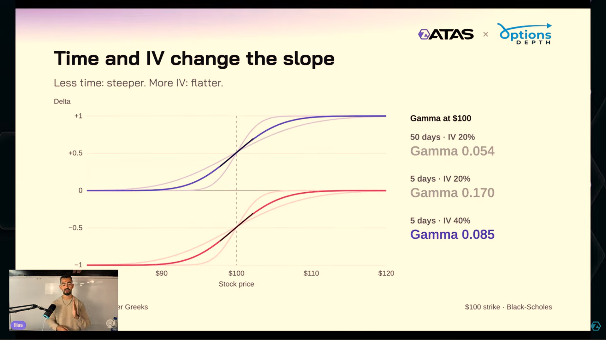

Tiempo e IV modifican Gamma

- Time and IV change the slope → El tiempo y la IV cambian la pendiente
- Less time: steeper. More IV: flatter → Menos tiempo: más inclinada
- más IV: más plana, cerca de ATM en este modelo → undefined
- Stock price → Precio del subyacente
- Gamma at $100 → Gamma con el subyacente en 100 USD
Gamma mostrado: 0,054 (50 días, 20 %); 0,170 (5 días, 20 %); 0,085 (5 días, 40 %).
ILIAS-L2-012 · Material del seminario ATAS × OptionsDepth / Ilias, capturado y aportado por el usuario. Lección 2 · Capítulo relacionado, inicio aportado · 07:47. Minutaje exacto de esta captura pendiente de localizar. Original inglés intacto; pulse la imagen para ampliarla.